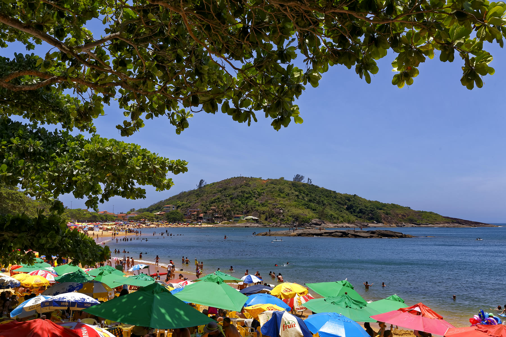

Arquipélago das Três Ilhas & APA de Setiba
O cartão-postal número 1 do turismo náutico no ES: águas mansas e cristalinas em ilhas desabitadas, perfeitas para flutuação, snorkel e avistamento de tartarugas.
Três Ilhas
Praia de Setiba
Setibão
Ilha de Quitongo
Consultar Três Ilhas no WhatsApp